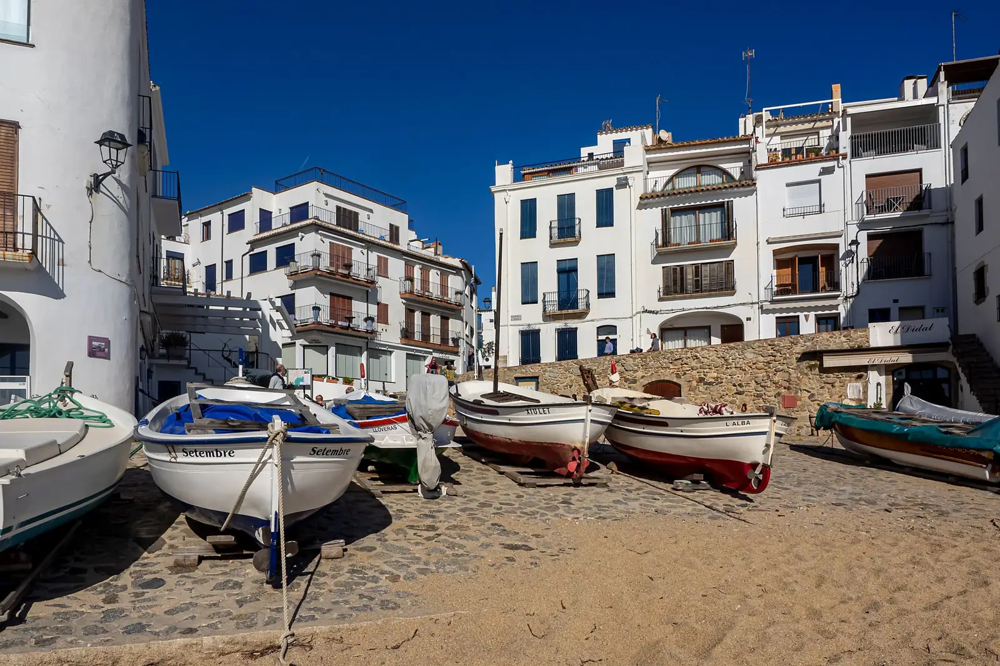

В этом сезоне
Октябрь 2026 — март 202744Игр за сезон0Титулы1Финалы2Третьи места
Последние матчи
Пример- победа
Marc · Joan Serra vs Xavi Costa · Sílvia Pons
6:4 3:6 10:7
- поражение
Marc · Marta Riera vs Jordi Puig · Laia Ferrer
4:6 4:6
- победа
Marc · Joan Serra vs Núria Vidal · Àlex Serra
6:2 6:3


В этом сезоне
Октябрь 2026 — март 202741Игр за сезон2Титулы1Финалы0Третьи места
Последние матчи
Пример- победа
Marta · Joan Serra vs Xavi Costa · Sílvia Pons
6:4 3:6 10:7
- поражение
Marta · Marc Ferrer vs Jordi Puig · Laia Ferrer
4:6 4:6
- победа
Marta · Joan Serra vs Núria Vidal · Àlex Serra
6:2 6:3
Часто играет с

В этом сезоне
Октябрь 2026 — март 20279Игр за сезон0Титулы0Финалы0Третьи места
Последние матчи
Пример- победа
Biel · Joan Serra vs Xavi Costa · Sílvia Pons
6:4 3:6 10:7
- поражение
Biel · Marta Riera vs Jordi Puig · Laia Ferrer
4:6 4:6
- победа
Biel · Joan Serra vs Núria Vidal · Àlex Serra
6:2 6:3